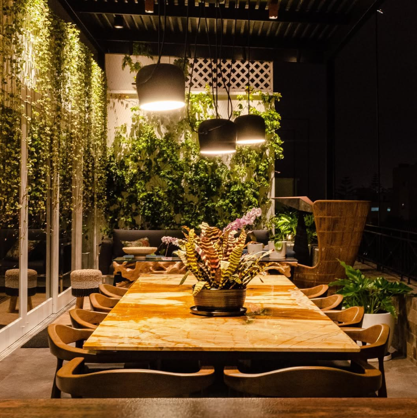

Arquitecta
Maria Angela
Maldonado
Fuentes

Diseñando espacios contemporáneos que equilibran funcionalidad, diseño atemporal y con identidad.
Detallista, curiosa y comprometida con cada proyecto.
01 · Tesis de titulación
D. P. A.

Propuesta de reestructuración de un puerto pesquero clave en el sur del Perú, integrando ciudad, borde costero y comunidad desde una visión contemporánea y sostenible.
02 · Proyecto residencial
Terrazas

TERRAZAS(images/terrazas-cover.jpg)
Desarrollo de proyectos residenciales unifamiliares enfocados en la transformación de espacios exteriores, especialmente terrazas y áreas sociales, integrando diseño, iluminación y paisaje para potenciar la experiencia de habitar.
03 · Proyecto retail
TFOP

Diseño e implementación de una tienda comercial de 31.90 m², que integra área de ventas, consultorio y almacén dentro de una planta no ortogonal, optimizando la funcionalidad, la circulación y la experiencia del usuario.
04 · Proyecto residencial
DPTO U

Proyecto de remodelación integral de departamento unifamiliar, con redistribución y renovación completa orientada a modernizar la vivienda y optimizar su funcionalidad y habitabilidad.